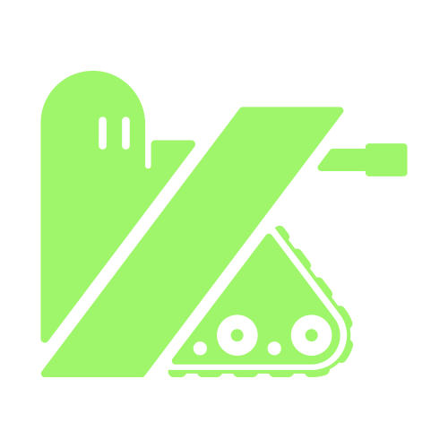
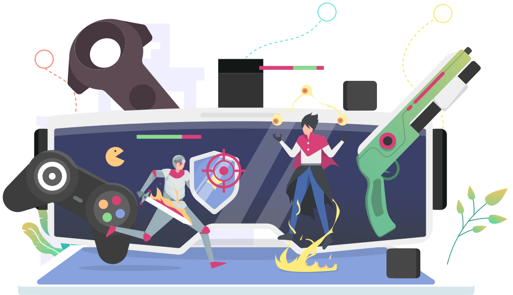
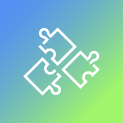
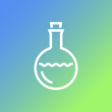

Subtle as a ghost
Scopri

Siamo la prima agenzia di consulenza italiana specializzata nel medium videoludico.

Cosa Facciamo
Aiutiamo le aziende a creare una presenza coerente, integrata ed efficace del loro brand e dei loro servizi all’interno del mercato dei videogame.
Aiutiamo gli studi di sviluppo e le software house a trovare i partner migliori per potenziare il proprio budget di start-up di progetto grazie a una fitta rete di sponsorizzazioni.
Come lo facciamo

Competenze strategiche di marketing digitale per una perfetta integrazione del prodotto/servizio all’interno del sistema-gioco

Skill creative per la produzione dell’ADV

Consulenze di game-design
Gestione del rapporto tra marketing e sviluppo dell’ADV nel prodotto
Strategie di comunicazione a supporto dello studio di sviluppo per il lancio del videogame stesso
Blog


Sarah è mia-XVIII
Matthew Darren e Kenneth Cloagh si incontrarono all’altezza dell’Atlantic Double Dune Reserve.
13 / 07 / 2016 / 3min read. Read More